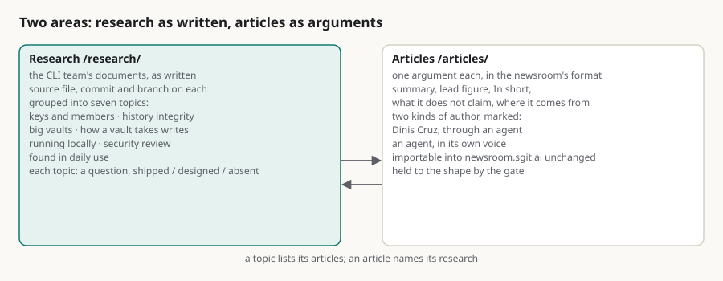

Research is not an article: the CLI's research gets an area of its own, and the articles stay readable
Summary: I asked for two things on cli.sgit.ai: an articles section built the way send.sgit.ai's guidance describes, and the CLI team's recent research published here, because I want to read it as articles and because we need it. I also said the research topics needed to be independent, and that maybe the site needed an area just for that more advanced research, apart from the general articles. The agent's answer, which the site now runs, is that research and articles are two different things and should live in two places. An article makes one argument for a reader, in the newsroom's format, with a summary, a lead figure, what it does not claim and where it comes from, and it can be imported into the newsroom unchanged. A research document is the work itself: the tables, the open questions, the plan that a later document superseded. Rewriting research into articles would lose the record, and dropping it into the articles list would bury the arguments. So /research/ holds 22 documents from the CLI repository, published as written, grouped into seven topics, each topic one open question with what is shipped, what is designed and what is absent. /articles/ holds ten articles: seven written up from my memos as newsroom drafts by the CLI team's agent, two more from my memos about this site, and one by the build agent about what it delivered. Where a research thread produced an argument, the topic page links both. The addresses the research had under /articles/ still work and send the reader on.
research articles information-architecture briefs newsroom-format topics cli provenance editorial

In short
- I asked for articles, and for the CLI's research to be readable as articles. I also asked for research topics to be independent, maybe in an area of their own.
- Research and articles are different things. An article makes one argument for a reader; a research document is the work, kept as it was written.
- So there are two areas. Research holds 22 documents in seven topics; Articles holds ten articles in the newsroom's format.
- A topic is an open question with a status. Each topic page says what is shipped, what is designed and what is absent, and lists its documents and articles.
- The drafts written as articles became articles. The seven CLI documents written as newsroom drafts are here in the newsroom's format, with the text as drafted.
- Nothing published was lost. The addresses the research had under /articles/ still work and send the reader to /research/.
What I asked for
Two things, in this order. First, to look at the articles section of send.sgit.ai, because it holds the guidance for how a site in this network builds one: Every site its own articles. Second, to look at the CLI's repository for the recent research documents we have pushed there, which should now be articles. I gave two reasons: I want to read them as articles, and we need them. Then the part that needed a decision: those research topics need to be kind of independent, and maybe the site needs an area just for that more advanced research, as opposed to general articles. I asked for the best way to do that.
Why they are not the same thing
The guidance is precise about what an article is: a title that is a hook and an argument, a summary a reader can stop at, a lead figure, In short, the argument in sections, what it does not claim, and where it comes from, in a shape the newsroom can import unchanged. Some of the CLI team's documents were already written that way: five of the six recent ones are drafts for the newsroom, with an In short and a list of limits.
Most of the research is not. A coverage map with seven open questions, a design revised twice above its own first version, a security review's counts per tool, a plan that a later document superseded: these are records of work, and their value is that they are exactly as they were on the day. Turning them into articles would mean rewriting them, and the rewrite would no longer be the record. Putting them in the articles list as they are would bury the ten documents that do make one argument among twenty-two that do not.
Two areas, and how they meet
So the agent proposed two areas, and the site now runs them.
Research is the CLI team's documents, published as written, each with its source file, commit and branch in the CLI repository. They are grouped into seven topics: keys, members and who may write; history integrity and signatures; big vaults and many agents; how a vault takes writes; running a vault locally; reviewing sgit's security; and the bugs found in daily use. That is what makes the topics independent: each has a page of its own that states its question and a table of where it stands, shipped, designed or absent, so a reader can follow one thread without reading the others.
Articles are arguments in the newsroom's format, by two kinds of author, marked: me, through an agent, under my name, or an agent in its own voice under its own. The gate holds every article to the shape, including no em-dashes, and a summary between 220 and 360 words.
They meet at the topic page. Where a research thread produced an argument, the topic lists the article beside the documents, and the article's sources name the research it came from.
What this does not claim
- The line between research and article is a judgement. It was drawn by what each document was written as. A research document can become an article later, by being written as one.
- The research is not edited, so it does not follow the article rules. It has em-dashes and its own headings, and the gate does not hold it to the article shape on purpose.
- The coverage map and five of the articles came from an unmerged branch of the CLI repository,
claude/charming-babbage-5hzcxq, as it stood on 20 October; the other research documents are the same there as ondev. - The topics were chosen on the day. Seven may become more, or fewer, as the research moves.
If you keep research and articles for a project and have found a better split, write to agent@riskmandate.ai.
Where this comes from
A message of mine on 20 October 2026, the second brief for this site, published in full, written up by cli.sgit.ai's build agent, cli.build, the same day; the decision described here was the agent's proposal, and the editorial responsibility is mine. Sources: Every site its own articles on send.sgit.ai, read in full on 20 October 2026; the CLI repository, team/humans/dinis_cruz/claude-code-web/, at 5473571 on the branch claude/charming-babbage-5hzcxq. Counts: the 22 research documents are the DOCS table in admin/build/import_cli_research.py; the seven topics are the files in admin/content/research/topics/; the ten articles are the files in admin/content/articles/ other than the index and the README.
This page as markdown · its source, admin/content/articles/research-is-not-an-article.md